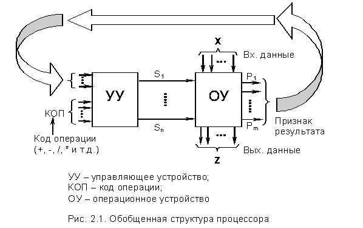
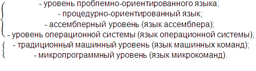
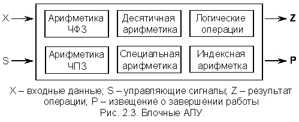
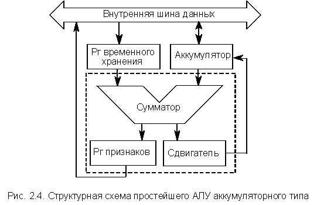
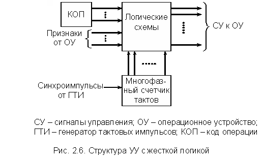
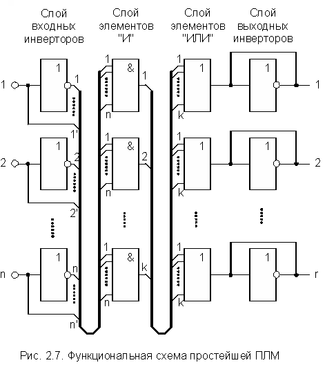
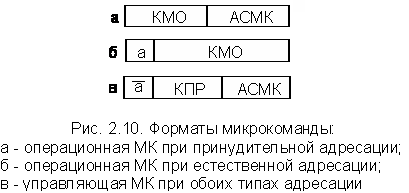
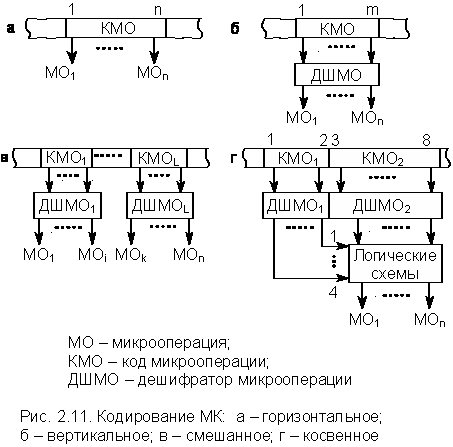
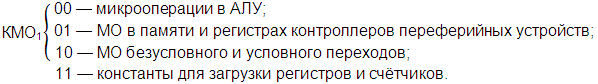
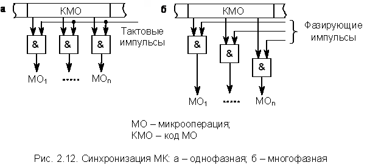

1. Обобщенная структура процессора
2. АЛУ
3. Управляющие устройства
Ранее, при рассмотрении обобщенной структуры ЭВМ, отмечалось, что основным устройством, непосредственно осуществляющим переработку поступающей в ЭВМ информации, является процессор (в больших ЭВМ – центральный процессор). Естественно, что конкретные типы ЭВМ содержат в своем составе процессоры, построенные по различным схемам, и процессоры больших ЭВМ существенно отличаются от процессоров мини- и микроЭВМ (о суперЭВМ и говорить не приходится). Однако основные принципы построения процессоров, в общем-то, одинаковые, причем наиболее наглядно их можно продемонстрировать на примере простейшего микропроцессора. Это оправдано и с той точки зрения, что инженер-разработчик радиоэлектронной аппаратуры или аппаратов автоматического управления имеет дело не с большими ЭВМ, а с микропроцессорными комплектами и построенными на их базе мини- и микроЭВМ. Ввиду этого более подробно остановимся на обобщенной структуре микропроцессора.
Процессор состоит из двух устройств – операционного (ОУ) и управляющего (УУ).
ОУ – выполняет элементарные операции, например, сложение, вычитание, сдвиг, пересылка и др..
УУ – управляет ОУ, задавая необходимую последовательность выполнения этих операций.
Согласно принципу В.М. Глушкова, в любом устройстве обработки цифровой информации можно выделить операционный и управляющий блоки.
В качестве узлов УУ и ОУ включают в себя регистры, счетчики, сумматоры, мультиплексоры, дешифраторы и т.д., т.е. устройства импульсной цифровой техники. Кроме того, нормальное функционирование процессора и всей ЭВМ возможно только при наличии высокостабильных импульсных последовательностей, формируемых, как правило, из одной импульсной последовательности, вырабатываемой кварцевым генератором. Эти тактовые импульсные последовательности синхронизируют работу узлов процессора, а иногда и всей ЭВМ.
Обобщенная структура любого процессора изображена на рис. 2.1.
Каждая элементарная операция, выполняемая в одном из узлов ОУ в течение одного тактового периода, называется микрооперацией.
В определенные тактовые периоды одновременно могут выполняться несколько микроопераций, например: R2 ¬ 0, Сч ¬ (Сч) – 1 и т.д. Такая совокупность непротиворечивых микроопераций называется микрокомандой, а набор микрокоманд, предназначенный для решения задачи, называется микропрограммой.
Если в ОУ предусмотрена возможность выполнения n различных микроопераций, то из УУ должно выходить n управляющих цепей S1,...,Sn, каждая из которых соответствует своей микрооперации. В силу того что УУ определяет микропрограмму, т.е. какие и в какой временной последовательности должны выполняться микрооперации, оно получило название микропрограммного автомата. Соответственно ОУ часто называют операционным автоматом.

Формирование управляющих сигналов S1,...,Sn может зависеть как от внешних сигналов КОП (команды ассемблера), так и от состояния узлов ОУ, определяемого известительными сигналами признаков состояния P1,...,Pm, поступающими с выхода ОУ на соответствующие входы УУ.
Как уже отмечалось, ОУ выполняет над исходными данными различные арифметические и логические операции, поэтому ОУ наиболее часто называют арифметико-логическим устройством, или АЛУ.
Деление любого процессора на программный и операционный автоматы достаточно очевидно и не вызывает особых трудностей в понимании. Однако структурные схемы даже простейших реальных процессоров, помимо АЛУ и УУ, содержат еще ряд узлов (регистров, счетчиков, дешифраторов), которые вроде бы не относятся ни к АЛУ, ни к УУ. Для устранения путаницы в дальнейшем материале необходимо сделать ряд замечаний:
1. В абсолютном большинстве случаев устройства обработки цифровой информации имеют многоуровневую структуру, т.е. построены по принципу "матрешки". Это означает, что УУ и ОУ могут сами распадаться на пары УУ' и ОУ', которые, в свою очередь, также могут распадаться на соответствующие УУ и ОУ. Все зависит от степени детализации рассмотрения данного цифрового устройства. Этот принцип многоуровневости справедлив для всех устройств ЭВМ.
Действительно, если рассматривать процессор в целом и делить его на УУ и ОУ, то совершенно безразлично, как выполняются арифметико-логические операции в ОУ – с помощью очень сложных логических схем или с помощью простой логики, работающей под управлением какого-либо вспомогательного УУ. Аналогичные рассуждения справедливы и для УУ.
Так, например, центральный процессор больших ЭВМ общего назначения середины 70-х годов разбивался на 4-5 уровней, на каждом из которых можно выделить свое УУ и ОУ. Современные процессоры имеют еще более сложную структуру.
Более того, эти рассуждения справедливы в целом для ЭВМ, которую можно разложить на ряд виртуальных (кажущихся) машин и с каждой работать на соответствующем уровне. В общем случае современные универсальные ЭВМ имеют шесть уровней:

Машинные языки двух нижних уровней являются цифровыми, и программы на них состоят из длинных числовых последовательностей, очень неудобных для человека, но понятных машине. Все более высокие уровни содержат слова и аббревиатуру, что более удобно для человека.
2. Из сказанного следует, что только самые простейшие процессоры имеют один уровень и могут быть в чистом виде разложены на УУ и ОУ, состоящие из комбинационных логических схем, способных выполнять элементарные арифметико-логические операции.
3. В настоящее время нет строгого определения АЛУ, что вызывает некоторую путаницу при пользовании различной литературой. АЛУ обычно обозначают так, как показано на рис. 2.2. При этом одни авторы подразумевают под АЛУ только комбинационные логические схемы, способные выполнять операции двоичного суммирования (т.е. фактически двоичный сумматор), другие – целый комплекс схем для выполнения арифметико-логических операций, который сам может быть разложен на УУ и ОУ.
4. Из сказанного следует вывод, что в общем случае понятия микрооперации и микропрограммы относительны и требуют конкретизации уровня рассмотрения процессора, поскольку один такт верхнего уровня может включать в себя несколько тактов нижнего уровня.
5. Для устранения путаницы при изучении основных принципов построения элементарных процессоров будем считать:
Различные арифметические операции над числами требуют выполнения существенно различных последовательностей микроопераций.
В общем случае операции, выполняемые в АЛУ, можно разделить на следующие группы:
ЭВМ общего назначения обычно реализуют операции приведенных выше групп, но делают это по-разному, в зависимости от типа АЛУ, используемого в процессоре.
АЛУ подразделяется на блочные и многофункциональные.
В блочных АЛУ (рис. 2.3) перечисленные группы операций выполняются в отдельных электронных блоках, при этом повышается скорость работы, так как блоки могут параллельно выполнять соответствующие операции. Кроме того, специализированный блок всегда выполняет операции быстрее, чем универсальный перенастраиваемый блок.

Блочные АЛУ характерны для больших ЭВМ, где главным является максимальное быстродействие, а не аппаратные затраты и стоимость. Простейшие сопроцессоры в микроЭВМ, выполняющие операции с ЧПЗ, также можно рассматривать как специализированные блоки, поэтому АЛУ микроЭВМ с сопроцессорами можно иногда рассматривать как блочные.
В многофункциональных АЛУ перечисленные группы операций выполняются одними и теми же схемами, которые коммутируются нужным образом в зависимости от требуемого режима работы. Такие АЛУ характерны для мини- и микроЭВМ, построенных на простых процессорах.
Следует иметь в виду, что часто ЭВМ, построенные на базе простейших микропроцессоров, имеют АЛУ, позволяющие выполнять только операции двоичной арифметики над ЧФЗ и некоторые логические операции. В этом случае остальные группы операций выполняются специальными подпрограммами, что сильно понижает скорость их выполнения.
Рассмотрим несколько подробнее структуру АЛУ простейшего процессора и определим минимально необходимый набор входящих в него устройств. Из изложенного выше следует, что в состав такого АЛУ должно входить устройство, выполняющее операции двоичного суммирования (сумматор). Кроме того, для хранения операндов и результата необходимо иметь, по крайней мере, три буферных регистра (регистры временного хранения). Однако в простейшем случае результат операции можно записывать в один из регистров временного хранения на место одного из операндов. Этот регистр принято называть аккумулятором, а процессор в целом – процессором аккумуляторного типа. Аккумулятор должен обязательно иметь двунаправленную связь с внутренней шиной данных процессора. (В более сложных АЛУ результат операции может быть записан по желанию программиста в любой из специально выделенных для этой цели регистр). Для выполнения арифметико-логических операций необходимо устройство, выполняющее сдвиги двоичных чисел (сдвигатель). И, наконец, необходим регистр, в котором хранятся некоторые признаки результата выполненной операции, необходимые для функционирования УУ (регистр признаков).
Структурная схема АЛУ простейшего микропроцессора аккумуляторного типа изображена на рис. 3.4.
Уже отмечалось, что АЛУ в целом и двоичный сумматор имеют одно обозначение. В соответствии со сделанными ранее замечаниями регистр временного хранения и аккумулятор можно считать вспомогательными узлами АЛУ.

Выше отмечалось, что УУ (рис. 2.5) управляет работой АЛУ путем выработки последовательности микрокоманд, необходимых для выполнения той или иной операции (+, -, /, * и т.д.). Порядок выполнения микрокоманд определен микропрограммой реализации операции, но может изменяться в зависимости от признаков операции, вырабатываемых в АЛУ (P1,...,Pm) и подаваемых на вход УУ.
Микропрограммы могут иметь как линейную структуру, так и быть разветвленными, причем условные переходы осуществляются в соответствии с признаками P.
Технические реализации УУ даже простейших процессоров разнообразны. Однако в самом общем случае их различают по способу хранения микропрограмм. По этому критерию УУ подразделяются на УУ с жесткой (схемной) логикой и УУ с хранимой в специальной памяти микропрограммой. Если микропроцессорная память доступна программисту, то УУ являются микропрограммируемыми и позволяют изменить систему команд процессора. Если микропрограммная память не доступна, то процессор имеет неизменную систему команд, как и в случае УУ с жесткой логикой.
Данные варианты отличаются друг от друга принципами построения, аппаратными затратами, временем реализации микропрограмм, возможностью изменения последовательности микрокоманд, а следовательно, и системы команд процессора.
УУ современных процессоров во многих случаях комбинированные. Выполнением простых команд управляет быстродействующее УУ на жесткой логике, а выполнением сложных команд – более медленное УУ с микропрограммной памятью.
Ниже будут рассмотрены общие принципы построения обоих типов УУ.
УУ с жесткой логикой
УУ, построенные на жесткой логике (рис. 2.6), исторически появились первыми. Основным преимуществом таких УУ является их быстродействие. Именно поэтому абсолютное большинство специализированных процессоров, особенно предназначенных для обработки информации в режиме реального времени, имеют УУ на жесткой логике. Под специализированными понимаются процессоры, предназначенные для выполнения узкого набора специальных функций (обработка сигналов радиолокационных станций, преобразование Фурье, матричные операции, обработка сигналов в скоростных линиях связи и т.д.) с максимальной скоростью.
Однако и в процессорах общего назначения с универсальными наборами команд УУ на жесткой логике также используются очень широко, особенно, как уже отмечалось, для управления выполнением простых команд. Системы команд таких процессоров всегда фиксированные и не могут быть изменены пользователем. Подобные УУ иногда называют специализированными.
Специализированные УУ формируют неизменные последовательности сигналов управления (СУ).
Блок логических схем состоит из комбинационных схем, регистров, счетчиков, дешифраторов и других устройств, выполняющих функции запоминания текущего состояния автомата, определяющего СУ, и формирования следующего состояния в соответствии с входными признаками.
Микропрограмма в таком автомате хранится за счет системы жестких связей между узлами УУ. Для изменения микропрограммы требуется демонтаж жестких связей и создание новой схемы.

Одним из недостатков УУ на жесткой логике является то, что любые изменения или модификации команд универсального процессора, требующие изменения микропрограмм, приведут к изменению структуры управляющего автомата, а, следовательно, и топологии его внутренних связей. При производстве специализированных процессоров требуется весьма широкая номенклатура УУ (по числу решаемых задач) при относительно небольшой потребности в каждом конкретном типе. С точки зрения технологии микроэлектронного производства процессоров в виде БИС и СБИС указанный недостаток является весьма существенным. Увеличивается цена каждого выпущенного кристалла процессора за счет увеличения расходов на разработку новых топологий УУ и отладку технологии их производства.
Оптимальным решением этой проблемы явилось построение УУ на специализированных логических структурах с фиксированной топологией – программируемых логических матрицах (ПЛМ). ПЛМ является слоистой структурой, в каждом слое которой сосредоточены однотипные логические элементы. Топология связей построена таким образом, что на входы каждого элемента последующего слоя подаются выходные сигналы всех элементов предыдущего слоя. ПЛМ может выполняться как отдельная БИС, так и формироваться внутри кристалла процессора, являясь весьма удобным элементом для создания управляющих автоматов.
Обобщенная функциональная схема простейшей ПЛМ представлена на рис. 2.7.

При изготовлении ПЛМ образуется схема, допускающая множество вариантов обработки входных сигналов. Входные элементы позволяют иметь все входные переменные, как в прямой, так и в инверсной форме. На входы любого элемента "И" поданы все входные переменные и их инверсии. Ко входам каждого элемента "ИЛИ" подключены выходы всех элементов "И". Наконец, выходные элементы позволяют получить любую из выходных функций в прямом или инверсном виде.
Программирование матрицы состоит в устранении ненужных связей с помощью фотошаблонов или выжиганием (подобно тому, как это делается в ПЗУ).
Программируя ПЛМ, можно реализовать нужные системы булевых функций. Это позволяет строить управляющие автоматы весьма сложной структуры. В силу своей сложности УУ, как правило, описывается большим количеством булевых функций многих переменных. Эти переменные, в свою очередь, часто бывают зависимыми, поэтому оказывается необходимой совместная минимизация системы булевых функций, реализуемой ПЛМ.
Рассмотренная выше функциональная схема иллюстрирует только саму идею построения ПЛМ. Структура же реально выпускаемых БИС достаточно разнообразна. Для построения управляющих автоматов наиболее удобны БИС, содержащие наряду с ПЛМ набор выходных триггеров.
Следующим поколением устройств типа ПЛМ являются ПЛИС – программируемые логические интегральные схемы, позволяющие программно скомпоновать в одном корпусе электронную схему, эквивалентную схеме, включающей от нескольких десятков до нескольких сотен ИС стандартной логики.
В настоящее время на мировом рынке доминируют несколько производителей ПЛИС – XILINX, ALTERA, LATTICE, AT&T, INTEL. Выпускаемые ими ПЛИС весьма разнообразны по сложности, назначению, многофункциональности и т.д., однако все они делятся на две большие группы – EPLD и FPGA.
EPLD – многократно программируемые для сохранения конфигурации используется ППЗУ с ультрафиолетовым стиранием.
FPGA – многократно реконфигурируемые для сохранения конфигурации используется статическое ОЗУ.
Фирмы-производители поставляют также полное инструментальное обеспечение для разработки и применения устройств на базе EPLD и FPGA с помощью персональных компьютеров.
УУ с хранимой в памяти логикой
Идея создания микропрограммного УУ возникла давно, в 1951г., но реализовать ее в полном объеме удалось сравнительно недавно – с появлением компактных устройств памяти на БИС. Обобщенная структурная схема микропрограммного УУ изображена на рис. 2.8.
В общем случае МК может задавать одну или несколько МО. Микропрограмма хранится в ПМК. Адрес МК формируется контроллером КПМК и запоминается в регистре адреса МК (РгАМК). МК считывается из памяти в регистр микрокоманды (РгМК). МК, в общем случае, имеет три поля – АСМК, КМО, КПР.
В последнее заносят признак разветвления в микропрограмме, который необходимо анализировать в КПМК. Адрес первой МК определяет КОП, т.е. происходит вызов соответствующей микроподпрограммы. АСМК может указываться в МК явным образом или формироваться естественным путем (при последовательной выборке МК). После выдачи СУ на ОУ происходит выполнение МК, после чего цикл (выборка-реализация) повторяется.
Выборка и выполнение МК
Возможны три варианта взаимного расположения циклов выборка-реализация.
Последовательный способ (рис. 2.9, а)
В этом случае выборка следующей МКi+1 не инициируется до момента окончания предыдущей МКi. Достоинством метода является, прежде всего простота организации МК-цикла.
Параллельный способ (конвейер МК) – рис. 2.9, б
Имеет место совмещение этапов выборки МКi+1 и реализации МКi. При равенстве периодов выборки и реализации достигается сокращение МК-цикла теоретически в 2 раза.
Параллельно-последовательный способ (рис. 2.9, в)
Используется при наличии МК условной передачи управления, когда адрес следующей МК зависит от результата предыдущей МК. Выборка МКi+2, стоящей после МКi+1 условного перехода, возможна только после завершения МКi+1.
Используются два основных способа адресации – принудительная и естественная.
Принудительная адресация сводится к тому, что в каждой микрокоманде, включая операционные, указывается адрес следующей за ней микрокоманды (рис. 2.10, а).
Естественная адресация характерна тем, что адрес следующей микрокоманды образуется путем увеличения адреса предыдущей микрокоманды на 1. Это позволяет исключить поле адреса из операционных микрокоманд и уменьшить разрядность ПМК.
Для выполнения условных и безусловных переходов в микропрограмме используются управляющие микрокоманды, содержащие адрес перехода и поле признаков (КПР) при обоих типах адресации. Таким образом, операционные и управляющие микрокоманды должны различаться некоторым признаком (рис. 2.10, б и в). Признак a определяет тип МК (например, a = 1 – операционная).
Коротко остановимся на формировании адреса при естественной адресации. В КПМК есть специальный счетчик адреса микрокоманд (СчА), в котором в конечном итоге формируется адрес следующей микрокоманды. Алгоритм формирования адреса следующей МК зависит от ее типа, а именно:
· операционная МК – после выборки МК СчА := СчА + 1;
· управляющая МК – после выборки происходит проверка условия, заложенного в МК. Если условие выполняется, то СчА := АСМК, а если условие не выполняется, то СчА := СчА + 1.

Кодирование МК
Выбор способа кодирования микрокоманд представляет собой достаточно сложную задачу и зависит от структуры процессора и его целевого назначения, системы команд, быстродействия и т.д. Рассмотрим только основные способы кодирования микрокоманд.
1. Горизонтальное кодирование (рис. 2.11, а). Это простейший вариант кодирования микрокоманд, при котором каждый разряд поля кода микроопераций однозначно определяет управляющий сигнал для выполнения микрооперации.
Достоинство данного способа состоит в том, что он допускает работу нескольких устройств, т.е. параллельное выполнение ряда МО, что повышает быстродействие.
Недостаток способа – при большом наборе МО (от нескольких десятков до нескольких сотен) возрастает разрядность МК и, следовательно, разрядность ПМК.
2. Вертикальное кодирование (рис. 2.11, б). Это другой подход к кодированию МК с целью максимального сокращения разрядности поля КМО. В этом случае требуется дешифратор МО, который увеличивает временные задержки и, следовательно, время выполнения МО.
Помимо увеличения времени на МО к недостаткам следует отнести невозможность параллельного выполнения МО.
3. Смешанное кодирование (рис. 2.11, в). Это кодирование устраняет основные недостатки, присущие горизонтальному и вертикальному кодированиям.
При таком кодировании в отдельных полях кода МО объединяют взаимоисключающие наборы для обеспечения параллельного выполнения МО с разных полей. Данный способ кодирования находит широкое применение в микропрограммных УУ.
Способы 1, 2, 3 – это прямые способы кодирования. Здесь каждое поле КМО формирует определенный набор управляющих сигналов, интерпретируемых всегда одинаковым образом.
4. Косвенное кодирование (рис. 2.11, г). Этот способ кодирования позволяет еще больше уменьшить разрядность МК. Здесь одно и то же поле можно использовать для формирования СУ для различных блоков, при этом его функции определяются другим полем.
На рис. 2.11г КМО1 кодирует одну из четырех групп МО, поле КМО2 определяет реализуемую в данной группе операцию.

Пример:
КМО2 позволяет выполнить 64 МО в любой из указанных групп оборудования.
Недостатком такого способа кодирования является увеличение объема оборудования и, следовательно, дополнительных задержек при исполнении МО.
Рассмотренные способы кодирования являются одноуровневыми. На практике используют и многоуровневое кодирование (микрокоманды, нанокоманды и т. д.).
Синхронизация МК
С этой точки зрения МК делятся на однофазные и многофазные. При этом в МК может быть включен дополнительный разряд, определяющий тип синхронизации.
Достоинством однофазных МК (рис. 2.12, а) является простота технической реализации.
Многофазные МК (рис. 2.12, б) позволяют минимизировать число МК в памяти, упрощают выполнение сложных МК и связь между приемником и источником информации. Недостатком является увеличение объема оборудования для формирования многофазных синхросигналов.

Время выполнения некоторых МО бывает существенно меньше рабочего такта процессора (время выполнения одной МК), что позволяет при горизонтальном кодировании в одном такте выполнять не только совместимые, но и ряд несовместимых МО. Для этого рабочий такт процессора делят на подтакты (фазы), в каждом из которых выполняется одно или несколько элементарных действий (МО) по реализации МК.